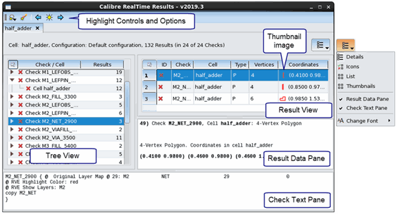

Viewing Results in the Calibre RealTime Digital Results Window
Prerequisites
You have completed a Calibre RealTime Digital run. See “Running Calibre RealTime Digital in IC Compiler II” or “Running Calibre RealTime Digital in Cadence Innovus”.
You have a Calibre RVE license. See “License Timeout for Calibre RealTime Digital” for setting the license timeout period.
Enable “Launch RealTime results viewer automatically” at the top of the Calibre RealTime Options dialog box to have the Calibre RealTime Digital Results window open automatically after a run.
Video
The video “How to Review Calibre RealTime DRC Results” demonstrates basic procedures in reviewing results using the Calibre RealTime results viewer.
Procedure
- Click the
 toolbar
icon to open the Calibre RealTime Digital Results window if it did not
open automatically.
toolbar
icon to open the Calibre RealTime Digital Results window if it did not
open automatically. The results are shown in a window that is similar to Calibre RVE for DRC. Results from different cells are shown in different result tabs. If you are using multiple Run Configurations, results from different configurations are displayed in different result tabs.
